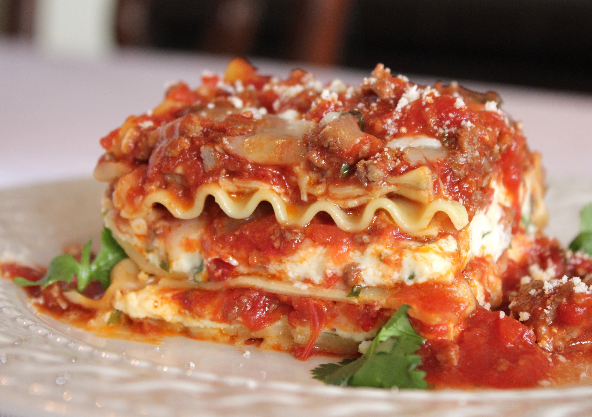

Lasagna

Description
Lasagna is a food. Its a great food for people that like lasagna. It is
made primarily of meat, cheese, noodles, and sauce.
Ingredients
- lasagna noodles
- spaghetti sauce
- ground beef
- mozzarella cheese
- salt and pepper
Instructions
-
Preheat oven to 375 degrees F (190 degrees C). Bring a large pot of
lightly salted water to a boil. Add noodles and cook for 8 to 10 minutes
or until al dente; drain and set aside.
-
Place pork and beef in a large, deep skillet. Cook over medium high heat
until evenly brown. Stir in tomato sauce, crushed tomatoes, parsley,
garlic, oregano, onion, sugar, basil and salt. Simmer over medium-low
heat for 30 minutes, stirring occasionally.
-
In a large bowl, combine cottage cheese, eggs, Parmesan cheese, parsley,
salt and pepper.
-
In a 9x13 inch baking dish, place 2 layers of noodles on the bottom of
dish; layer 1/2 of the cheese mixture, 1/2 of the mozzarella cheese and
1/2 of the sauce; repeat layers.
-
Cover with aluminum foil and bake in preheated oven for 30 to 40
minutes. Remove foil and bake for another 5 to 10 minutes; let stand for
10 minutes before cutting; serve.